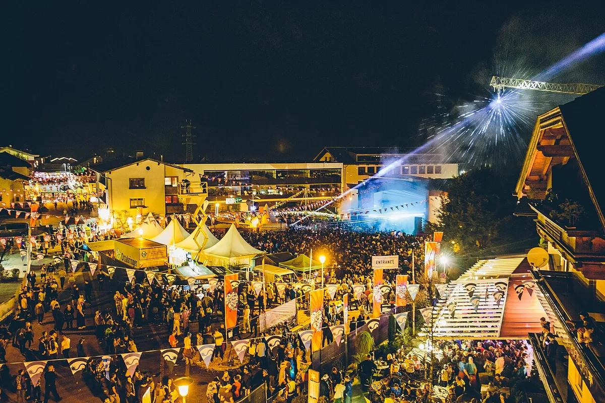
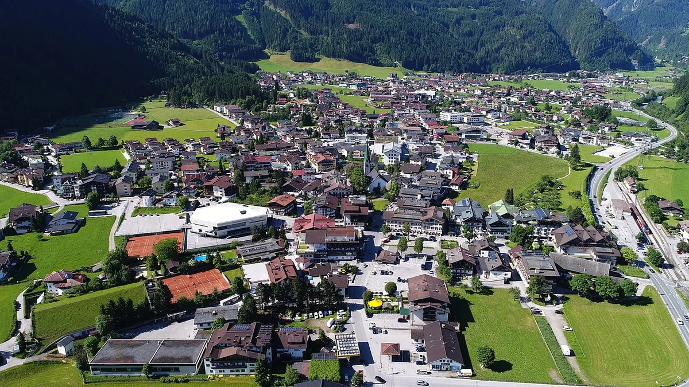
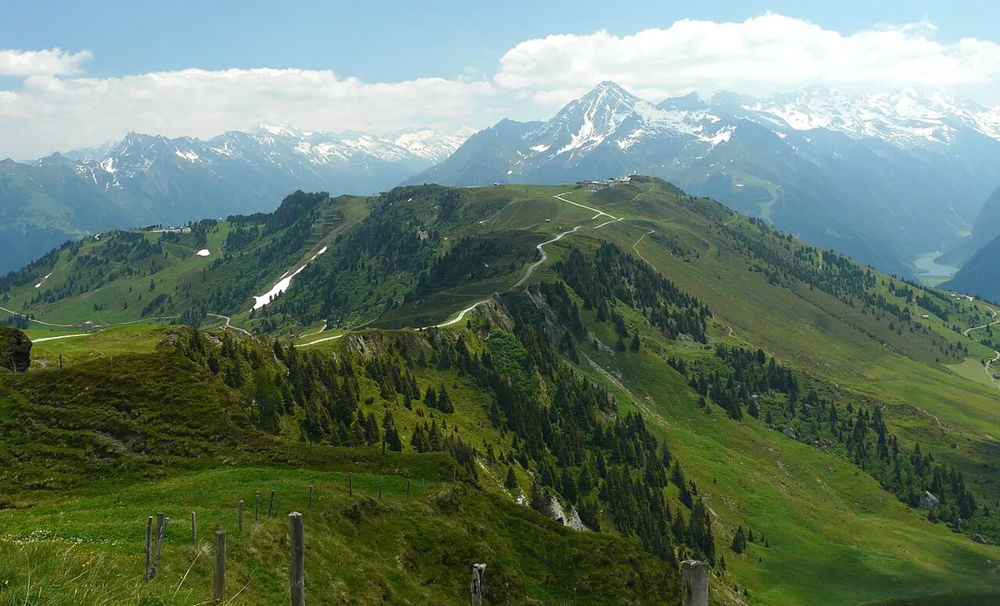
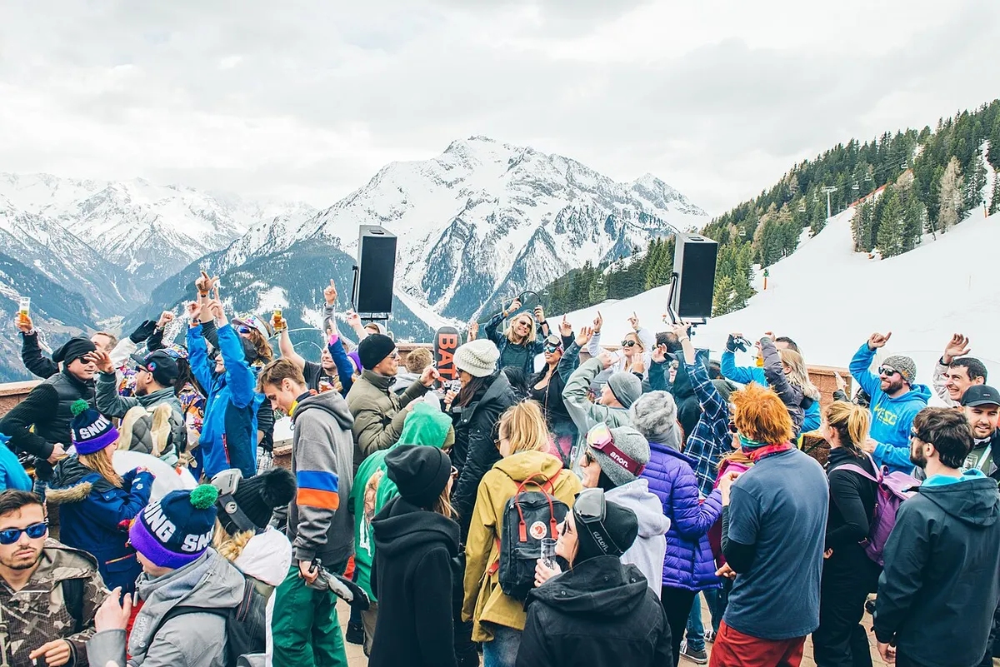

Festival guide, 2027
Snowbombing 2027: dates, tickets and Mayrhofen
The ski and music festival in the Austrian Alps: when it runs in 2027, how the packages and wristbands work, where it is held and who plays.
A week in the mountains with the music built in.
Most festivals sell a ticket and leave the rest to you. Snowbombing sells a week in the mountains with the music built in, and that changes the questions people ask. How much is it, once the bed is counted? Can I go for a day? What do I need to know before I book?
This page answers those questions from the festival's own site, read on 4 October 2026, and it ends with sets to hear first. Where the site still carries last year's wording, the page says so.
What is Snowbombing?
Snowbombing is a six-day ski holiday and music festival in Mayrhofen. Its archive lists editions from 2000 to 2026 with none for 2021, which would make 2027 the 27th. The festival's FAQ text says it was established in 1999, so the site is not consistent about its start.
The days run to a pattern. Mountain venues generally run from 12pm to 4pm, with the last lift down to town at 4:30pm. Evening entertainment starts in town from 3pm and goes on until the early hours.

The festival is not a single site. Its stages are spread across the village and the slopes, and your wristband covers all announced venues, parties and events except three paid extras: the Mountaintop Brunch, the Bongo's Bingo Biggest Ever Snow Show and the wellness experiences.
When is Snowbombing 2027?
The official core festival dates are Monday 5 April to Saturday 10 April 2027. The festival suggests arriving on Sunday 4 April for the opening parties and leaving on Sunday 11 April, and the booking widget lets you pick an earlier arrival date.
The festival's own pages place it in early April, for spring skiing.
One warning about the official site: its FAQ still carries answers written for 2026, including a question headed "When does Snowbombing 2026 take place?" and a payment-plan answer that mentions 1 March 2026. The booking page, which is the one to trust for 2027, says the £50 deposit is paid at booking and the rest in instalments by 1 March.
Where is Snowbombing held?
Snowbombing is held in Mayrhofen, in the Zillertal, a valley in Tyrol, Austria. The festival describes Mayrhofen as a Tyrolean village at about 630 metres, at the head of the Zillertal, and its site claims more than 625 km of piste in the area.

The festival's site names the Penkenbahn cable car as the lift from the village, and says the Hintertux Glacier can be skied all year.
Getting there means flying to Munich or Innsbruck and taking a road transfer. Snowbombing sells airport transfers, and its 2026 FAQ also lists UK coaches. Once you are in the valley a ski bus runs every 30 minutes until 5:30pm, and a night shuttle then covers the same route.
The venues named on the festival's site are the Forest Stage, the Street Party, Pilz Bar, The Racket Club, Rompa's Reggae Shack (which books dub, reggae, jungle and bass), The Fun Haus, The Vault (the late-night room), Liebies at the Strass Hotel, and Hans the Butcher, a series of pop-ups. The Mountaintop Brunch is ticketed separately.
How do Snowbombing tickets work?
You cannot buy a ticket on its own. The FAQ says day wristbands are not available, and that the festival sells only weeklong wristbands, bought with accommodation for a minimum of five nights. Every package on the booking page includes accommodation and a wristband, and the prices shown include a £249 wristband.
On 4 October 2026 the cheapest package on the booking page was £399 per person at Zillertal Valley Apartments. Eckartauerhof and Edge of Town Apartments were £519 and £529, and Kumbichlhof was £529. At the top, Sporthotel Strass was £1,009 and Strass Apartments £1,139. Edelweiss was sold out. The page groups packages as Luxury Central Hotels, Budget Friendly Hotels, and Chalets and Group Apartments, and these are "from" prices, so check the room type and dates you pick.
The rules that catch people out, as the FAQ states them:
- Deposit. £50 per person, with the rest in instalments by 1 March.
- Age. 18 and over, with photo ID and proof of age.
- Refunds. Only if the event is cancelled.
- Transfers. Tickets are non-transferable except through the official process, which needs 28 days' notice and a £30 fee.
- Where to buy. Only through the official agent, Kaboodle. E-tickets arrive by email.
- VIP. An SB VIP wristband adds 24 hours' early access to Mountaintop Brunch tickets, fast-track collection and entry to headline venues, VIP areas and bars, 10% off merchandise and a welcome drink.

Lessons and equipment hire are sold separately. The FAQ notes that most hire shops stock no boots above UK size 12.
Who plays Snowbombing 2027?
The site had announced these acts on 4 October 2026, with more to be announced: Bicep (live), Fatboy Slim, 2manydjs (DJ set), Andy C, Basement Jaxx (DJ set), East End Dubs, Ewan McVicar, Gaskin, Groove Armada (DJ set), Rossi, Skream, Wilkinson, Arielle Free, bullet tooth, Ellia Jaya, Fish56Octagon, Jess Iszatt, Sasha GiGi and Olive F.
Fatboy Slim, Groove Armada and Basement Jaxx are the big beat and party names, Gaskin, East End Dubs and Rossi bring house, and Andy C, Skream and Wilkinson bring bass music. A line-up announced in stages will change before April, so treat this list as a snapshot.

Which Snowbombing sets should you hear first?
Start with the only one from the festival. DJ Mag uploaded Fatboy Slim's secret mountaintop DJ set at Snowbombing, and it shows what the festival is: a DJ set on a mountaintop.
After that, hear the 2027 acts in the rooms they usually play. Bicep, Basement Jaxx, Andy C and Rossi are on the bill, and each has a Boiler Room set in the catalogue. East End Dubs, Groove Armada and Wilkinson have Mixmag sets, and Skream and Benga have a Boiler Room set from Melbourne.
For a set from a festival you have not heard of, the Selector plays a DJ set at random.
For the rest of the winter calendar, see the best winter music festivals, and for a different kind of festival week, the best electronic music festivals in Europe.
Snowbombing FAQ.
What is Snowbombing?
A six-day ski holiday and music festival held in Mayrhofen, in the Zillertal valley in Tyrol, Austria. It sells packages that include accommodation and a festival wristband, and its stages are spread across the village and the slopes.
When is Snowbombing 2027?
Monday 5 April to Saturday 10 April 2027, according to the festival's FAQ. It recommends arriving on Sunday 4 April and leaving on Sunday 11 April.
Where is Snowbombing?
In Mayrhofen, Austria, a village at 630 metres at the head of the Zillertal. The festival says to fly to Munich or Innsbruck.
How much does Snowbombing cost?
On 4 October 2026 the booking page showed packages from £399 per person, with a £249 wristband included in every price. The most expensive listed was £1,139 per person. The deposit is £50.
Can you buy a day ticket for Snowbombing?
No. Day wristbands are not available. The festival sells only weeklong wristbands, bought with accommodation for at least five nights.
What is the age limit for Snowbombing?
18 and over. Bring photo ID and proof of age.
Who is playing Snowbombing 2027?
Bicep (live), Fatboy Slim, 2manydjs, Andy C, Basement Jaxx, Groove Armada, East End Dubs, Skream and Wilkinson were among the acts announced on 4 October 2026, with more to be announced.
How do you get to Snowbombing?
Fly to Munich or Innsbruck and take a transfer to Mayrhofen. Snowbombing runs transfers from the airports, and in the valley a ski bus runs every 30 minutes until 5:30pm, then a night shuttle.
Sources.
- Dates, ticket rules, wristband access, travel and age limit, read on 4 October 2026: Snowbombing info and FAQ. Parts of the FAQ still describe 2026.
- Packages, prices and deposit, read on 4 October 2026: snowbombing.com/book.
- Venues, resort and line-up, read on 4 October 2026: venues, Mayrhofen and line-up pages.
- Past editions: snowbombing.com previous line-ups.
Continue reading
Read next.
 Music history~22 min read
Music history~22 min readBreakbeat Music: History, Sound and Evolution
From funk breaks and pirate radio to cracked VSTs and modern bass hybrids.
Read article → Music history~18 min read
Music history~18 min readJungle Music: From Roots to Revival
Pirate radio, dubplates, MC energy and the global return of a distinctly Black British sound.
Read article → Music history~16 min read
Music history~16 min readWhat Is UK Garage? The Sound, 2-Step, Speed Garage and Bassline
London played an American record too fast until the beat broke. The branches it split into, and the numbers behind its revival.
Read article → Music history~12 min read
Music history~12 min readWhat Is Drum and Bass? 174 BPM, History and Subgenres
Fast breakbeats, deep sub-bass and the British rave continuum behind a global genre usually played between 170 and 180 BPM.
Read article →